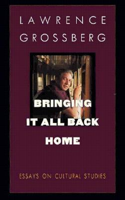
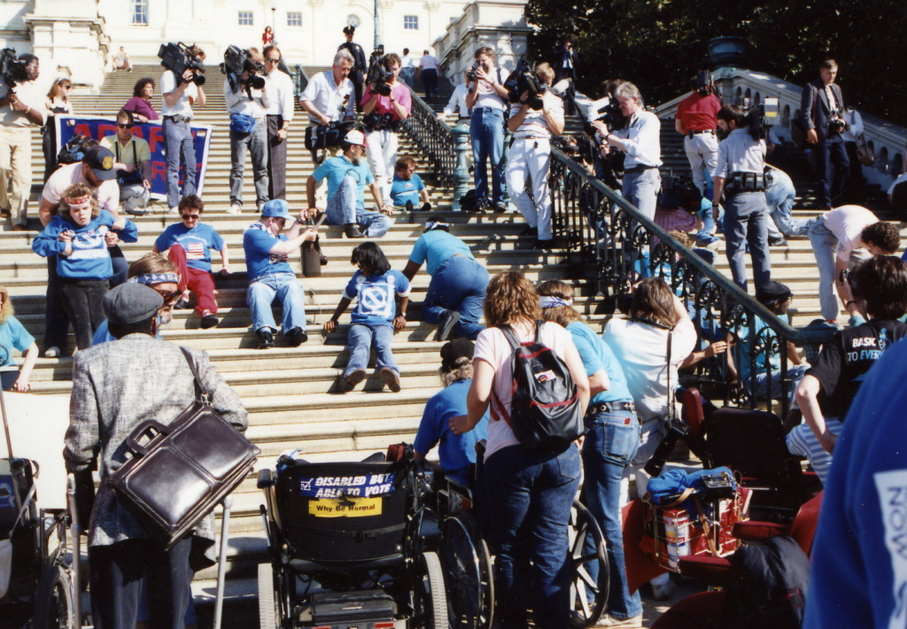
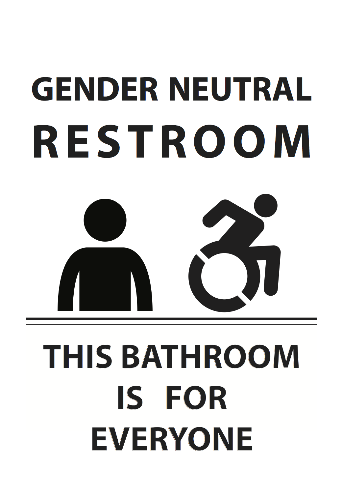

Productive Interpretations
Encouraging Patron Agency through Cultural Criticism
If you'd like to follow along, load this in your browser: http://www.ryanpatrickrandall.com/talks/capal16.html
Created by Ryan P. Randall
Hello!
Agency
- Cultural studies on agency & cultural criticism
- Traditional LIS accounts of patron agency
- Examples of how to encourage agency
Cultural Studies & Agency

"Capitol Crawl" for the ADA

1990 protest for Americans with Disabilities Act
Washrooms

"Culture"
Raymond Williams, Keywords
Culture as practices, not just elite connoisseurship
Cultural Criticism
Janice Radway, Reading the Romance and reader response criticism focusing on how readers use texts
Critiques of Library Discourse around Agency
- John Buschman's Libraries, Classrooms, and the Interests of Democracy
- Wayne Wiegand's "To Reposition a Research Agenda"
- Henry Giroux's "Schooling and the Culture of Positivism"
Examples of Using Cultural Criticism
Vivian Harsh, director of Bronzeville library in Chicago:
- Conversations with poets like Langston Hughes
- Readers' discussions forums (more than book club)
- Speakers from range of political parties
Laura Burt's "Vivian Harsh, Adult Education, and the Library's Role as Community Center"
Pedagogical orientation
- Problem-posing rather than banking
- Signage that presents a theme rather than a set
Thank You!